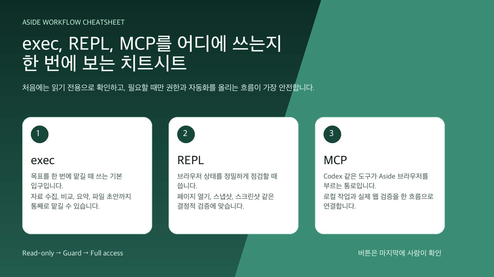
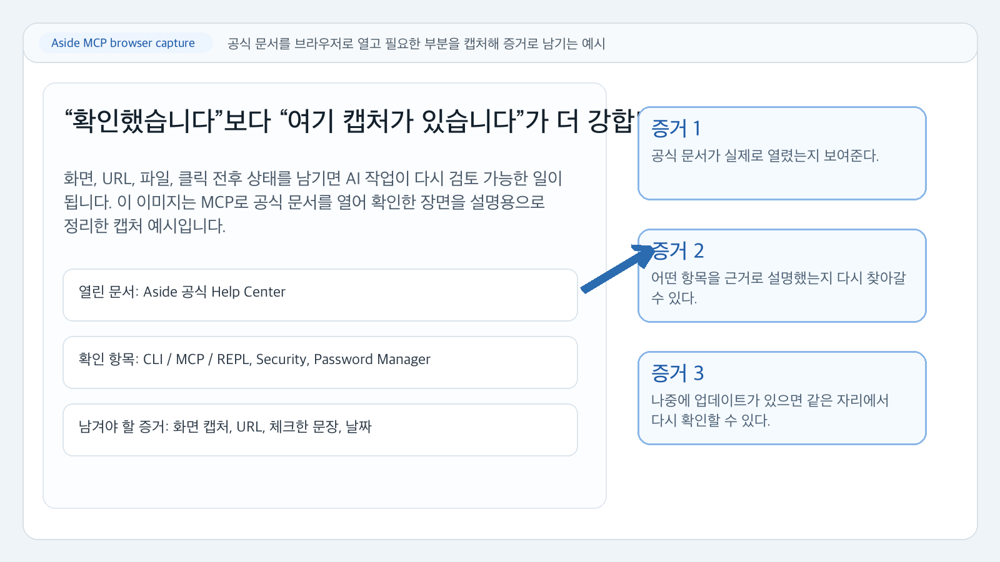
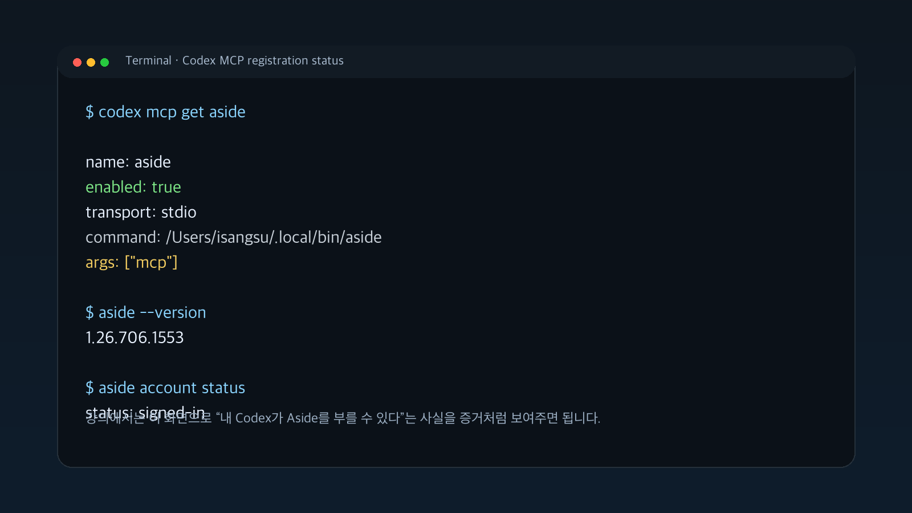

0. Aside를 한 문장으로 말하면
Aside는 웹페이지를 함께 보면서 정리, 비교, 확인, 반복 작업을 도와주는 브라우저입니다.
일반 AI 채팅은 대화를 중심으로 움직입니다. Aside는 브라우저 화면, 열린 페이지, 로그인된 사이트, 파일, 작업 기록까지 함께 다루는 쪽에 가깝습니다. 그래서 처음에는 큰 자동화보다 작은 부탁부터 시작하는 편이 좋습니다.
1. 시작 전 3가지 안전벨트
읽기만 시키는 모드입니다. 첫 실습은 항상 여기서 시작합니다.
필요한 접근은 물어보고 진행합니다. 파일을 만들 때 기본 선택입니다.
넓은 권한으로 진행합니다. 익숙해진 뒤 낮은 위험 작업에만 씁니다.
바로 기억할 문장
"아무 버튼도 누르지 마."
"제출, 결제, 발송, 삭제는 하지 마."
"초안까지만 만들고 멈춰."
"근거 링크를 같이 보여줘."
2. Aside 화면을 간단히 나누기
| 이름 | 쉬운 설명 | 잘 맞는 일 |
|---|---|---|
| 브라우저 기본 질문 | 지금 보는 페이지에 바로 질문 | 페이지 요약, 단어 설명, 핵심 찾기 |
| 사이드 패널 | 옆에서 페이지를 보며 도와주는 창 | 현재 글 검토, 이메일 초안, 체크리스트 |
| 작업 페이지 | 여러 사이트와 파일을 오가며 일하는 공간 | 가격 비교, 자료 조사, 파일 정리 |
| Ultrabrowse | 출처가 많이 필요한 깊은 조사 | 제품 비교, 공식 문서 모으기, 경쟁사 조사 |
| Routines | 반복되는 일을 정해진 흐름으로 실행 | 매주 뉴스 요약, 매일 알림 정리 |
| CLI/MCP | 개발 도구와 연결하는 통로 | Codex 같은 도구에서 Aside 조작 |

3. 첫날 5분 미션: 웹페이지 요약하기
뉴스, 블로그, 도움말 같은 글 하나를 엽니다.
질문창이나 사이드 패널을 엽니다.
처음에는 페이지 밖으로 이동하지 않게 막아둡니다.
이 페이지를 바탕으로만 정리해줘.
핵심 내용 5개, 중요한 근거 3개, 더 확인해야 할 점 3개를 표로 만들어줘.
페이지 밖으로 이동하지 말고, 버튼도 누르지 마.| 확인할 것 | 보면 좋은 기준 |
|---|---|
| 핵심 내용 | 원문에 실제로 있는 내용인가 |
| 근거 | 링크나 문장 근처를 찾기 쉬운가 |
| 더 확인할 점 | 과장, 빠진 정보, 날짜 문제가 잡혔는가 |
4. 둘째 미션: 비교표 만들기
Aside가 잘하는 일 중 하나는 여러 정보를 표로 정리하는 일입니다. 가격, 요금제, 정책은 자주 바뀌므로 확인 날짜를 함께 넣게 하세요.
복사해서 사용노트 앱 3개를 비교해줘.
비교 기준은 가격, 장점, 단점, 오프라인 사용, 팀 공유, 추천 대상이야.
공식 페이지를 우선 확인하고, 출처 링크를 표 안에 넣어줘.
가입, 구매, 다운로드는 하지 마.| 제품 | 가격 | 장점 | 단점 | 추천 대상 | 출처 |
|---|---|---|---|---|---|
| A | 확인 날짜 포함 | 짧게 | 짧게 | 누구에게 맞는지 | 공식 링크 |
5. 셋째 미션: 로그인 사이트에서 초안만 만들기
로그인 사이트에서는 더 조심해야 합니다. Aside가 계정을 볼 수 있는 상황이라면 편리하지만 위험도 같이 커집니다.
메일 초안, 답변 문장 다듬기, 문의 분류, 주문 내역 확인 목록, 게시글 초안 작성.
결제, 환불 제출, 계약 동의, 실제 발송, 게시, 비밀번호나 보안 설정 변경.
이 화면을 보고 답변 초안만 만들어줘.
실제 발송, 저장, 게시, 삭제, 결제, 계정 변경은 하지 마.
완성 문장 아래에 내가 직접 확인할 체크리스트를 붙여줘.6. 좋은 부탁 공식
Aside에게 일을 맡길 때는 네 칸으로 말하면 훨씬 안정적입니다.
| 칸 | 넣을 내용 | 예시 |
|---|---|---|
| 목표 | 무엇을 끝내고 싶은지 | 이 글의 핵심을 정리해줘 |
| 범위 | 어디까지 봐야 하는지 | 현재 페이지와 링크된 공식 문서만 |
| 금지 | 하면 안 되는 행동 | 가입, 제출, 결제, 삭제 금지 |
| 결과 모양 | 어떤 형태로 받을지 | 표와 5줄 요약 |
목표: [하고 싶은 일]
범위: [볼 자료]
금지: 제출, 결제, 발송, 삭제, 계정 변경 금지
결과: 표로 정리하고, 마지막에 내가 확인할 체크리스트를 붙여줘7. 버튼 누르기 전 멈춤표
아래 단어가 보이면 Aside에게 맡기지 말고 직접 확인합니다.
| 화면에 보이는 말 | 해야 할 일 |
|---|---|
| 결제, 구매, 구독 | 사람이 직접 확인 |
| 전송, 발송, 제출 | 초안만 만들고 멈춤 |
| 삭제, 초기화, 해지 | 직접 백업 후 판단 |
| 동의, 서명, 계약 | 법적 의미 확인 |
| 비밀번호, 2단계 인증 | AI에게 입력 요청 금지 |
| 세금, 금융, 대출, 보험 | 자료 정리까지만 사용 |
8. 재미있게 연습하는 7일 코스
9. 업무별 쉬운 사용 예시
핵심 개념, 예시, 헷갈리는 단어를 표로 정리하게 합니다.
공식 판매 페이지와 제조사 정보를 우선 보고 비교하게 합니다.
출처가 필요한 문장 옆에 링크를 붙인 초안을 만듭니다.
불만, 질문, 요청, 긴급으로 나누고 답장 초안을 만듭니다.
10. Ultrabrowse는 언제 쓰나
Ultrabrowse는 자료가 많이 필요한 조사에 어울립니다. 공식 문서 여러 개 모으기, 가격 정책 비교, 제품 기능 비교, 보안/개인정보 문서 확인에 좋습니다.
처음 쓰는 주문공식 문서를 우선해서 조사해줘.
확인된 사실, 해석, 아직 부족한 근거를 나눠서 정리해줘.
출처 링크를 빠뜨리지 말고, 오래된 자료는 날짜를 표시해줘.11. Routines는 언제 쓰나
매주 뉴스 요약, 매일 읽을 링크 정리, 가격 페이지 변화 확인, 고객 문의 분류 초안.
자동 결제, 자동 게시, 자동 발송, 자동 삭제, 계정 변경.
12. CLI/MCP는 쉽게 말해 무엇인가
CLI는 터미널에서 Aside를 부르는 방법입니다. MCP는 Codex 같은 도구가 Aside 브라우저와 연결되는 통로입니다.
대부분의 사용자는 처음부터 몰라도 됩니다. 다만 Codex와 함께 쓰면 웹페이지를 열고, 화면을 찍고, 문서를 읽고, 결과를 정리하는 일을 더 강하게 연결할 수 있습니다.

aside --version
aside --help
13. 잘 안 될 때 확인할 것
| 증상 | 먼저 볼 것 | 쉬운 해결 |
|---|---|---|
| 페이지 내용을 못 읽음 | 권한 또는 현재 탭 | 탭을 다시 열고 읽기 전용으로 재시도 |
| 결과가 이상함 | 범위가 너무 넓음 | "현재 페이지 기준"이라고 다시 지시 |
| 출처가 없음 | 출처 요청을 안 함 | "출처 링크를 표에 넣어줘" 추가 |
| 로그인 사이트가 막힘 | MFA, 보안 정책, 캡차 | 사람이 직접 로그인 후 요약만 요청 |
| 파일 작업이 불안함 | 폴더 권한이 넓음 | 별도 작업 폴더를 만들고 Guard 사용 |
| 너무 많이 실행함 | 금지 행동이 빠짐 | 제출/결제/삭제/발송 금지를 명시 |
14. 처음 쓰는 사람용 치트시트
이 페이지를 5줄로 요약하고, 중요한 근거 3개를 붙여줘. 아무 버튼도 누르지 마.이 정보를 표로 정리해줘. 확인된 사실과 의견을 분리하고, 출처를 넣어줘.답장 초안만 작성해줘. 실제 발송이나 저장은 하지 마. 마지막에 확인 목록을 붙여줘.여기서 멈추고 내가 직접 확인해야 할 항목만 목록으로 보여줘.15. 마지막 기억 카드
| 기억할 말 | 이유 |
|---|---|
| 작게 시작 | 처음부터 큰 자동화는 실수도 커집니다. |
| 읽기 전용 먼저 | 브라우저 상태를 바꾸지 않고 연습합니다. |
| 출처를 요구 | 사실과 추정을 나눕니다. |
| 버튼은 사람이 | 결제, 발송, 게시, 삭제는 최종 확인이 필요합니다. |
| 반복은 천천히 | 루틴은 낮은 위험 작업부터 시작합니다. |